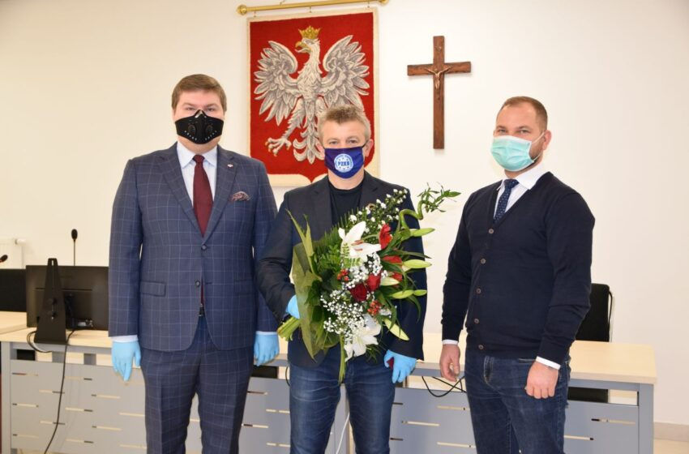
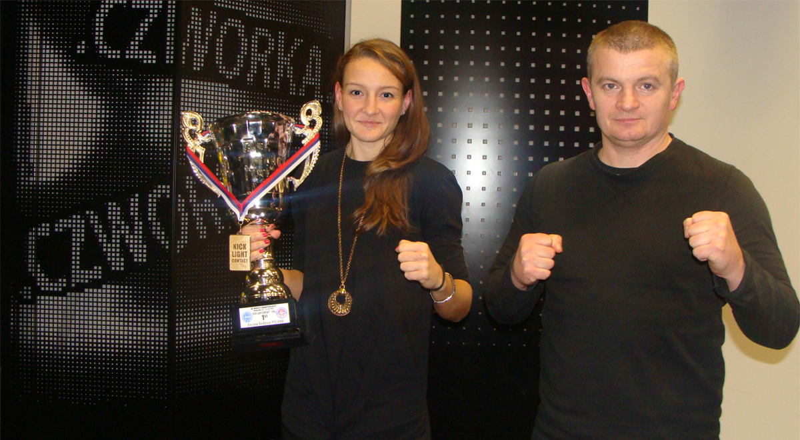

„Mistrz nie rodzi się na ringu – mistrz rodzi się na treningu.”
Mistrz nie rodzi się na ringu – mistrz rodzi się na treningu.
Jestem Piotr Siegoczyński, wielokrotny mistrz świata w kickboxingu. Znam smak zwycięstwa, ale też ból porażki. To one kształtowały mnie jako zawodnika i człowieka.
Dziś nie tylko trenuję, ale i szkolę innych — przekazując im to, czego sam nauczyłem się przez dekady. Niezależnie, czy zaczynasz swoją przygodę, czy chcesz wejść na wyższy poziom – możesz liczyć na moje wsparcie.
Droga przez ring
Każdy medal, każda walka, to osobna historia. Pierwszy tytuł Mistrza Polski zdobyłem jako młody chłopak pełen zapału. Potem przyszły kolejne — trudniejsze, bardziej wymagające.
Punktem kulminacyjnym była wygrana na mistrzostwach świata WAKO. To moment, którego nie da się zapomnieć – adrenalina, flaga Polski nad głową, łzy w oczach. Ale to nie koniec. Bo prawdziwy mistrz zawsze idzie dalej.
Moje sportowe chwile
Szukasz czegoś więcej niż zwykłego treningu?
Ze mną nie tylko poznasz techniki kickboxingu, ale nauczysz się dyscypliny, koncentracji i pracy nad sobą.
Niezależnie od wieku, poziomu czy celu — pomogę Ci osiągnąć maksimum Twoich możliwości.
+48 123 456 789
kontakt@piotrsiegoczynski.pl
Media

Piotr Siegoczyński wyróżniony za całokształt osiągnięć sportowych
17.11.2020
Piotr Siegoczyński, wielokrotny mistrz świata i Europy w kick-boxingu, obecnie trener KS Piaseczno oraz X Fight Piaseczno, został wyróżniony przez Ministra Kultury, Dziedzictwa Narodowego i Sportu brązową odznaką „Za Zasługi dla Sportu”.
Ze względu na pandemię uroczystość odbyła się w kameralnym gronie. Odznakę, w imieniu ministra, wręczył radny Sergiusz Muszyński, który przekazał również gratulacje i słowa uznania od wicepremiera Piotra Glińskiego. – Jesteśmy Panu bardzo wdzięczni za to wszystko, czego Pan dokonał. Nie ma potrzeby przedstawiania tutaj szerszego uzasadnienia, bo wszyscy znamy Pana dokonania. Niech to odznaczenie będzie wyrazem naszej wdzięczności i radości.
Wspaniałej kariery oraz wyjątkowych wyników w międzynarodowej rywalizacji pogratulował także Piotrowi Siegoczyńskiemu Starosta Piaseczyński Ksawery Gut.

Jakie czasy czekają polski kickboxing?
30.08.2017
Piotr Siegoczyński - były mistrz świata, trener oraz prezes PZKb.
Na kickboxingu zna się jak mało kto. Piotr Siegoczyński jako zawodnik był m.in. 6 razy mistrzem świata, wielokrotnie stawał na podium mistrzostw Europy. Do dziś potrafi jeszcze pokazać znacznie młodszym zawodnikom na czym polega ten sport. Przez wiele lat pracował jako trener, a jego zawodnicy i zawodniczki (m.in. Dorota Godzina) odnosili wiele sukcesów na arenach międzynarodowych, zarówno w amatorskiej jak i zawodowej odmianie kickboxingu. Od kilku miesięcy jest prezesem Polskiego Związku Kickboxingu. Podczas kandydowania obiecywał m.in. pozyskanie sponsorów i pracę nad promocja kickboxingu. Czy już są efekty jego pracy?